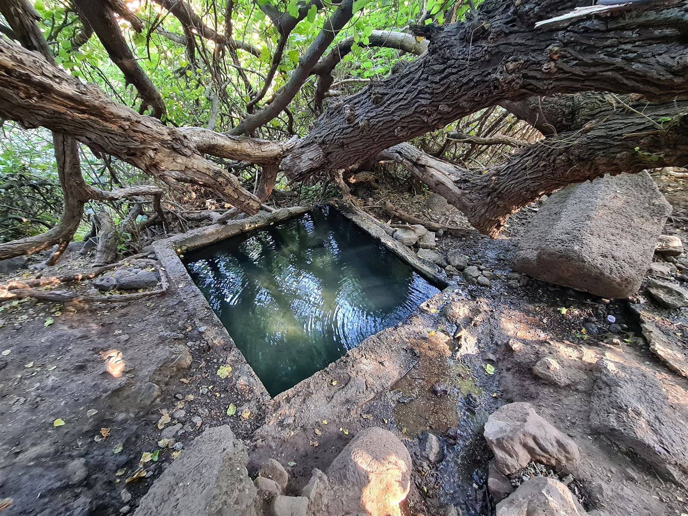
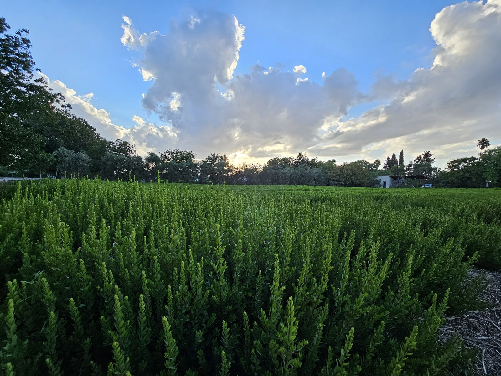
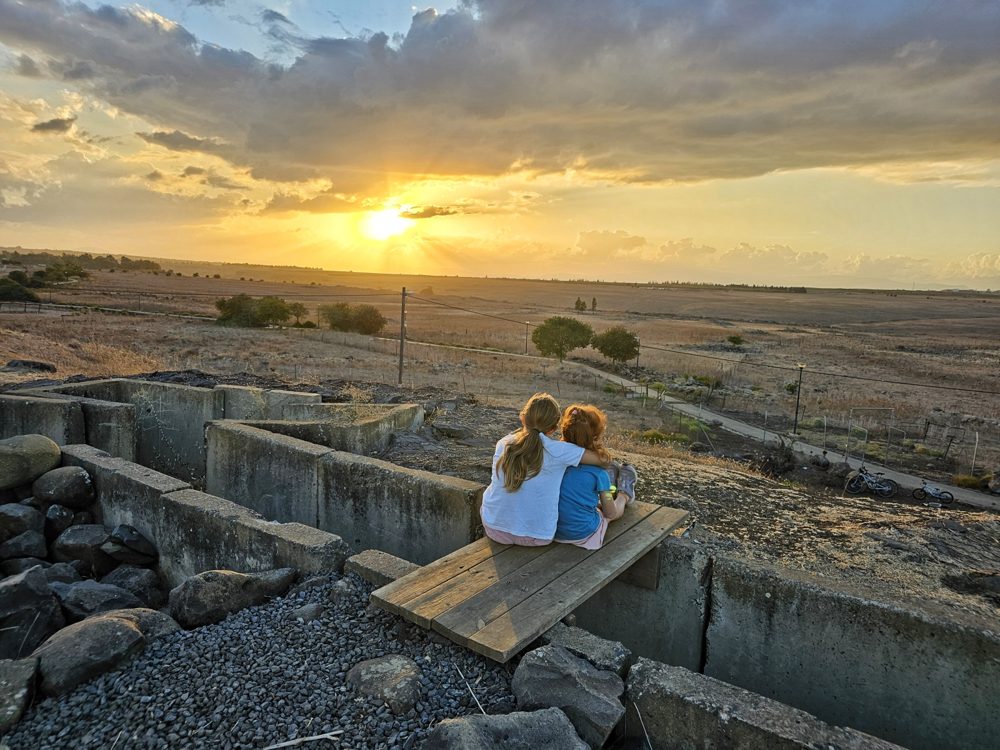
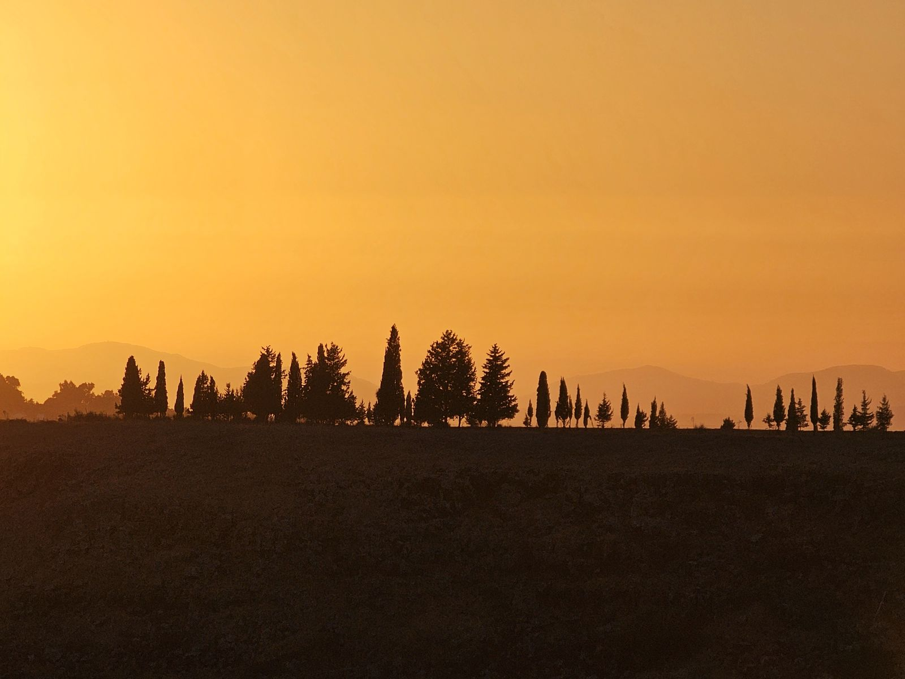
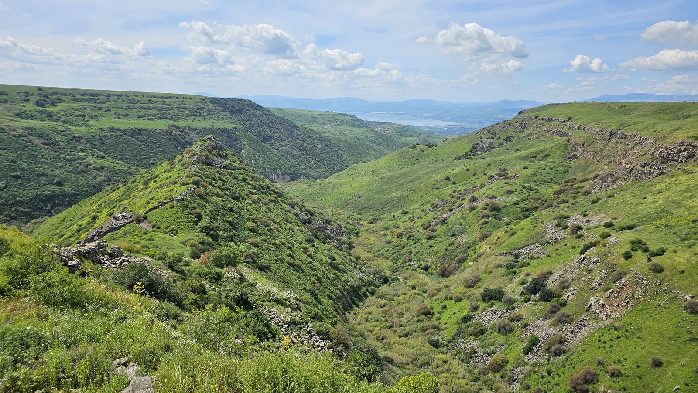
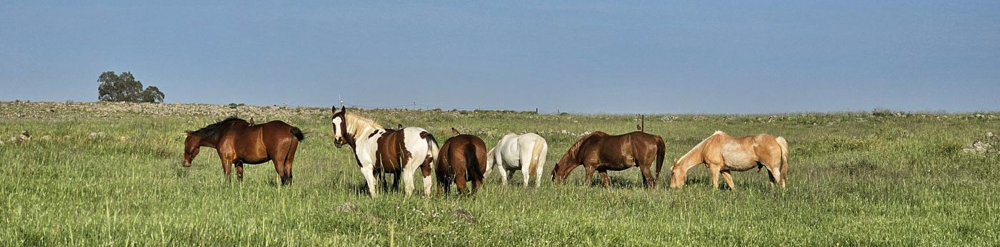

במרחק הליכה
תחילת המסע - אטרקציות, נחלים ומעיינות
עין כיף, אחו נוב, ואדי נוב, עין נוב, טיילת דרום הגולן ומושב נוב.
נוב · דרום רמת הגולן
הצעד הראשון מתחיל כאן במושב נוב, הטובל בין כרמים ושדות ופותח שער לטבע פראי. בצעדים ספורים תמצאו את עצמכם ליד מעיינות, נחלים או מאגרי מים.
אך זוהי רק טעימה ראשונה - מכאן נפתח בפניכם מסע מרתק בדרום רמת הגולן, עד למימיה הכחולים של הכינרת או צפונה עד החרמון.
נקודת המוצא
נוב, מושב חקלאי שוקק חיים. משקי החי המגוונים מעניקים לו אופי כפרי אותנטי. הייחודיות של נוב באה לידי ביטוי בגידול ההדסים - מספר משפחות מהמושב מגדלות הדסים והן מהוות פלח נכבד מאד משוק ההדסים העולמי.
המושב מתהדר במגוון בעלי חיים: פרות, סוסים, כבשים, עיזים. פינת החי המקסימה מוסיפה נופך מיוחד כשטווס ססגוני מטייל בחופשיות ברחובות המושב. כל שנה בתחילת האביב זוג חסידות עושה מסע נדודים ארוך כדי לחזור לקן המוכר שלהן על עמוד חשמל גבוה בקצה המושב.


טעמים מקומיים
נוב הוא מרכז של יצירה חקלאית מגוונת ועשירה. מטעי הנקטרינות והאפרסקים מניבים פירות מתוקים ועסיסיים, בעוד כרמי הזיתים מפיקים שמן זית איכותי. בעלי הכרם מפיקים מיץ ענבים אורגני, דבוראים מייצרים דבש טהור, וחוות העיזים מתמחה ביוגורט עיזים קרמי ובריא.
המשתלה המקומית מציעה מבחר עשיר של צמחים, עציצים, ומוצרי גינון לצד מתנות ייחודיות, רבות מהן תוצרת מקומית. נוב אינו רק מושב חקלאי, אלא מרכז של טעמים, ריחות וחוויות המשקפים את עושרה של רמת הגולן.
תחילת המסע

עין כיף, אחו נוב, ואדי נוב, עין נוב, טיילת דרום הגולן ומושב נוב.

קצר ברדוויל, עין הקשתות, נחל סמך, מצפה דימה, מצפה פישגופ, נחל מיצר, עין פיק, טיילת מבוא חמה, עין תאופיק ויער מבוא חמה.

בג'וריה, גמלא, מעיין כנף, עיינות עדן, מפל האירוסים, עין תות, ג'וחדר ועיינות פאחם.

רגע לעצור
אלבומים
חופשה בגולן
בוקר בנוב, קפה בעגלת קפה במשתלה
נסיעה לכינרת רק 20 דקות
נחל יהודיה במרחק של פחות מחצי שעה נסיעה